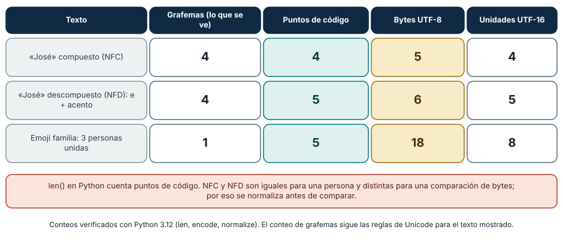
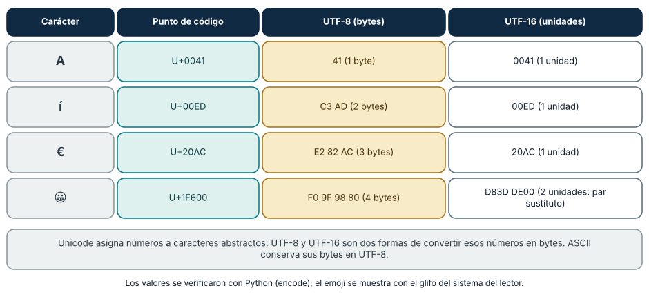
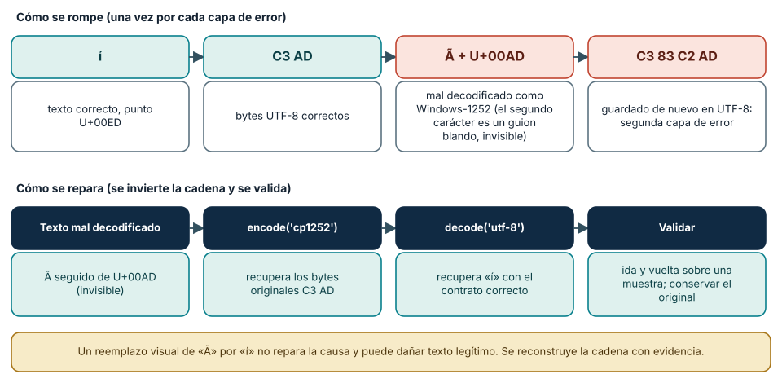

← SE-014 · ↑ Parte 01 · 📚 Índice completo · SE-016 →
Punto profesional y fundamento pedagógico
Punto profesional. La clase existe para distinguir carácter, punto de código, unidades de código, bytes y glifo al diagnosticar texto.
Por qué aparece aquí. Se sitúa después de Bits, bytes, bases numéricas y representación y antes de Enteros, coma flotante, precisión y errores numéricos: convierte el conocimiento anterior en una decisión observable que la clase siguiente podrá reutilizar. La continuidad se comprueba en el artefacto, no por compartir vocabulario.
Error conceptual que debe corregir. Tratar Unicode como una codificación única o suponer que toda corrupción es reversible.
Secuencia de aprendizaje. Conserva primero los bytes originales; luego predice puntos de código, UTF-8 y longitudes NFC/NFD de la entrada. Reproduce un mojibake en una copia, reconstruye la transformación y pide a otra persona que determine qué casos son reversibles. La recuperación se evalúa por la cadena causal, no porque el texto vuelva a verse bien.
Evidencia de aprendizaje. Text-lab.md con code points, hex, normalización y un fallo de decodificación reproducible. Debe contener predicción previa, observación, explicación causal, contraejemplo, criterio de aceptación y una nota de qué dato haría cambiar la conclusión.
Límite de la conclusión. Unicode no determina por sí solo tipografía, shaping ni bidi.
Trazabilidad fuente → afirmación
| Fuente primaria u oficial | Afirmación que respalda | Lo que no prueba |
|---|---|---|
| The Unicode Standard 18.0 | define el modelo y las propiedades Unicode vigentes | No demuestra por sí sola que el artefacto del estudiante sea correcto. |
| Unicode UTF FAQ | explica UTF-8, UTF-16 y BOM | No demuestra por sí sola que el artefacto del estudiante sea correcto. |
| Unicode Normalization Annex #15 | define las formas de normalización | No demuestra por sí sola que el artefacto del estudiante sea correcto. |
Antes de empezar
SE-014 mostró que los bits necesitan un contrato. Ahora el analizador local de eventos debe conservar Matrícula José ✓. La pantalla parece mostrar “caracteres”, pero el sistema intercambia bytes. Construirás la cadena carácter → punto de código → codificación → bytes y la usarás para provocar y reparar mojibake de forma explicada.
Prerrequisitos
Bits, bytes y hexadecimal de SE-014; Python 3.11+; archivos desechables.
Problema auténtico
Un CSV correcto llega como MatrÃcula. Reemplazar visualmente à por í puede corromper otros datos porque el síntoma procede de decodificar UTF-8 como otra codificación y volver a serializar. Se necesita reconstruir la transformación.
Objetivos observables
Distinguirás carácter, grafema, punto y unidad de código; explicarás UTF-8; demostrarás ida y vuelta; compararás normalizaciones; y diagnosticarás mojibake conservando bytes.
Temas y por qué importan
| Tema | Mecanismo | Por qué importa |
|---|---|---|
| Modelo Unicode | asigna puntos de código a caracteres abstractos | permite intercambio entre escrituras |
| UTF-8 | transforma puntos en bytes únicos | sostiene archivos y protocolos modernos |
| Normalización | compara secuencias equivalentes según forma | evita claves visualmente iguales pero distintas |
| Mojibake | bytes se decodifican con contrato incorrecto | permite reparar causa, no apariencia |
Mapa conceptual
Ver la notación fuente del diagrama
flowchart LR
C[Carácter abstracto í] --> P[Punto U+00ED]
P --> E[UTF-8]
E --> B[Bytes C3 AD]
B -->|UTF-8| C
B -->|Windows-1252| X[Texto mojibake Ã]La última flecha muestra el mecanismo del síntoma. El dibujo simplifica grafemas: lo visible puede contener varios puntos de código.
Conceptos y decisiones
1. Texto visible no equivale a una unidad técnica
Un carácter abstracto pertenece al repertorio Unicode. Un punto de código es su número. Una unidad de código es una unidad de una forma como UTF-16. Un grafema es una unidad que una persona percibe como carácter y puede reunir varios puntos. Por eso len() depende del modelo del lenguaje y no siempre cuenta símbolos percibidos.

Cómo leer la figura. La palabra «José» escrita con la «é» compuesta (NFC) tiene cuatro puntos de código y cinco bytes en UTF-8; escrita con una «e» seguida de un acento combinante (NFD) tiene cinco puntos y seis bytes, aunque una persona ve las mismas cuatro letras. El emoji de familia muestra el caso extremo: un grafema, cinco puntos de código unidos por un carácter de unión de ancho cero (U+200D), dieciocho bytes en UTF-8 y ocho unidades en UTF-16. Las cuatro columnas miden cosas distintas y ninguna es «el número de caracteres». Dónde deja de valer: los conteos de grafemas siguen las reglas de segmentación de Unicode (Anexo 29), que varían con la versión del estándar y con el soporte de fuentes y sistemas; un mismo emoji compuesto puede mostrarse como uno o como varios símbolos según el entorno.
2. Unicode es repertorio; UTF-8 es una forma de codificación
Unicode asigna puntos de código. UTF-8 los transforma en secuencias de uno a cuatro bytes y conserva ASCII como bytes iguales. Es reversible para secuencias válidas. El orden de bytes del procesador no altera UTF-8 porque se interpreta byte a byte. Un BOM en UTF-8 puede actuar como firma, no como indicador de endianess.

Cómo leer la figura. Cada fila lleva un carácter desde su número Unicode hasta los bytes de dos codificaciones. A ocupa un byte en UTF-8, idéntico a ASCII; í ocupa dos; €, tres; y el emoji, cuatro. En UTF-16 los tres primeros caben en una unidad de 16 bits, pero el emoji, que supera U+FFFF, necesita un *par sustituto* de dos unidades (D83D DE00). Por eso «Unicode de 16 bits» es una frase incorrecta: Unicode no tiene ancho; las codificaciones sí. Dónde deja de valer: los valores corresponden a las formas de codificación UTF-8 y UTF-16 big-endian; UTF-16 little-endian invierte los bytes de cada unidad, y UTF-32 usa siempre cuatro bytes por punto.
3. Codificar y decodificar son operaciones inversas bajo el mismo contrato
text.encode('utf-8') produce bytes; data.decode('utf-8') produce texto. Sin una codificación declarada, los bytes no contienen una etiqueta universal. Las políticas strict, replace o ignore cambian si el error se detiene, se hace visible o se pierde. Ignorar puede ser aceptable en visualización no crítica, pero es peligroso para identidades o registros auditables.
4. Normalización trata equivalencias, no apariencia universal
é puede ser U+00E9 o e más un acento combinante. NFC y NFD transforman entre formas canónicas; NFKC/NFKD aplican compatibilidad y pueden cambiar distinciones significativas. Normalizar ayuda a comparar, pero no reemplaza reglas de dominio ni resuelve caracteres visualmente similares de escrituras diferentes.
5. Mojibake conserva un rastro causal
Si bytes UTF-8 C3 AD se decodifican como Windows-1252 aparecen Ã. Si ese texto se guarda en UTF-8, nace una segunda capa. Reparar exige conocer o inferir con evidencia la cadena; aplicar sustituciones globales puede dañar texto legítimo. Se conserva copia, se prueba en muestra y se valida round-trip.

Cómo leer la figura. La fila superior reconstruye *cómo se rompe*: los bytes UTF-8 C3 AD se decodifican con Windows-1252, que los lee como dos caracteres (Ã y un guion blando U+00AD que no se ve); si ese texto se guarda otra vez en UTF-8 aparecen bytes nuevos (C3 83 C2 AD) y el error queda grabado en una segunda capa. La fila inferior invierte exactamente la cadena. En Python, "Matr\u00c3\u00adcula".encode("cp1252").decode("utf-8") devuelve Matrícula. Dónde deja de valer: la reparación solo es posible si la transformación original es reversible. Si algún byte fue sustituido por ? o por U+FFFD al guardarlo, la información se perdió y ninguna codificación la recupera: por eso se conserva siempre el original y se prueba sobre una muestra.
6. UTF-8 por dentro: cómo se reconoce cada byte
UTF-8 reparte el número de un punto de código en uno a cuatro bytes con un esquema que permite reconocer, mirando solo los primeros bits, qué papel cumple cada byte: 0xxxxxxx es un carácter ASCII de un byte; 110xxxxx abre una secuencia de dos bytes; 1110xxxx, una de tres; 11110xxx, una de cuatro; y 10xxxxxx es siempre un byte de continuación. Para la í, el punto U+00ED vale 1110 1101 en ocho bits o 000 1110 1101 en once; esos once bits se reparten como 110 00011 y 10 101101, es decir, C3 AD. Para el euro, U+20AC se reparte en tres bytes y produce E2 82 AC.
Este diseño tiene consecuencias prácticas. Es *autosincronizante*: si pierdes un byte puedes volver a alinearte buscando el siguiente byte que no empiece por 10. Es compatible con ASCII, de modo que un texto ASCII es UTF-8 válido sin cambios. Y permite detectar errores: un byte 0x80 aislado o un 0xC0 inicial no es válido, y bytes.decode("utf-8") lanza UnicodeDecodeError con la posición del problema. Las secuencias «demasiado largas» (por ejemplo, codificar un carácter ASCII con dos bytes) están prohibidas porque eran una vía de ataque para eludir filtros; un decodificador estricto las rechaza.
7. Comparar y buscar texto: normalización, mayúsculas y caracteres parecidos
Comparar texto exige decidir qué se considera «igual». La normalización resuelve una parte: "José" compuesto y "Jose\u0301" descompuesto son canónicamente equivalentes y, tras NFC, comparan iguales. Pero otras diferencias no desaparecen: ß en mayúsculas es SS, de modo que len cambia, y para comparar sin distinguir mayúsculas conviene casefold() en lugar de lower(). Algunos pliegues dependen del idioma (la «i» turca), y ninguna función universal los resuelve sin conocer el contexto.
Hay también una dimensión de seguridad. La letra cirílica а (U+0430) y la latina a (U+0061) se ven igual y son distintas; un nombre de usuario o un dominio puede suplantar a otro sin que una persona lo note, y la normalización no los unifica. El Informe Técnico 39 de Unicode (*Security Mechanisms*) describe listas de caracteres confundibles y estrategias de detección. La regla para identificadores es restringir el repertorio permitido y normalizar *antes* de comparar y de almacenar; para datos libres, conservar el original y comparar con una forma derivada.
8. Texto en los bordes del sistema: archivos, protocolos y bases de datos
Los errores de codificación nacen donde el texto cruza una frontera. Un archivo no lleva etiqueta de codificación; por eso open(ruta, encoding="utf-8") debe declararla siempre en lugar de heredarla de la configuración regional, que puede variar entre equipos (la PEP 686 propone que UTF-8 sea el valor por defecto en versiones futuras de Python, por lo que conviene verificar cuál aplica a la versión que uses). En HTTP, la cabecera Content-Type puede declarar charset; el JSON intercambiado entre sistemas debe codificarse en UTF-8 según el RFC 8259. En las bases de datos, el conjunto de caracteres de la conexión, de la tabla y de la columna deben coincidir. Una regla fiable es decodificar al entrar, trabajar con texto Unicode en el interior y codificar al salir, con la política de errores strict y una ruta de cuarentena para las filas inválidas.
Caso conductor: confirmar una matrícula sin perder el nombre
El analizador local de eventos serializa JSON con UTF-8 y declara el encoding al abrir archivos. Guarda texto normalizado solo si el dominio lo exige y conserva el original cuando la forma importa. El laboratorio compara José, Jose\u0301 y ✓; registra puntos, nombres Unicode, bytes y longitud en cada nivel.
Definiciones de trabajo
- punto de código: valor del espacio Unicode;
- codificación: transformación entre texto modelado y unidades binarias;
- grafema: unidad aproximada percibida por una persona;
- normalización: conversión a una forma Unicode definida;
- mojibake: texto ilegible por interpretación incompatible de bytes.
Glosario
Code unit es unidad de una forma de codificación. BOM es U+FEFF al inicio bajo ciertos protocolos. Replacement character U+FFFD hace visible una decodificación no recuperada.
Ejemplo mínimo
'í'.encode('utf-8').hex() devuelve c3ad. Decodificar esos bytes como latin-1 crea dos puntos de código; volver a codificar no recupera significado sin conocer el error.
Ejemplo profesional
Una importación recibe CSV sin charset. En vez de probar hasta “verse bien”, se obtiene metadato del productor, se conserva original, se valida muestra multilingüe y se rechazan secuencias inválidas con informe de fila.
Práctica guiada
Usa como base el laboratorio ejecutable de la Parte 01; trabaja sobre una copia o conserva tus salidas en el directorio work/SE-015/.
- Crea
unicode_probe.pyconunicodedata.name,normalize,encodeydecode. - Inspecciona
Matrícula José ✓y la forma descompuesta deé. - Demuestra UTF-8 → latin-1/Windows-1252 → mojibake sin sobrescribir el original.
- Compara NFC, NFD y longitudes; explica qué cambia y qué no.
- Prueba
strictyreplacecon bytes inválidos. - Entrega
text-cases.json,observations.mdy procedimiento de recuperación.
Ejercicios
- Explica por qué “Unicode de 16 bits” es incorrecto.
- Diseña un contrato para CSV con encoding y política de error.
- Analiza cuándo NFKC dañaría una identidad o código.
Reto verificable
Otra persona debe reconstruir bytes originales de dos casos y decir cuál no puede repararse sin información adicional. No aprueba una tabla de reemplazos visuales.
Preguntas frecuentes
¿UTF-8 representa todos los caracteres Unicode?
Sí, salvo puntos sustitutos que no son valores escalares codificables.
¿Normalizar arregla mojibake?
No. Opera sobre texto ya decodificado; el error de encoding requiere reconstruir bytes.
¿Debo escribir un BOM al inicio de mis archivos UTF-8?
Normalmente no. El BOM en UTF-8 es la secuencia EF BB BF y solo sirve como firma, ya que UTF-8 no tiene orden de bytes. Algunos programas lo exigen para reconocer la codificación y otros lo muestran como un carácter extraño al inicio del archivo. Decide según el consumidor y declara la decisión; Python lo maneja con la codificación utf-8-sig.
¿Por qué len("😀") da 1 en Python y 2 en JavaScript?
Porque cuentan unidades distintas. Python cuenta puntos de código y el emoji es uno; las cadenas de JavaScript se indexan por unidades UTF-16, y el emoji ocupa dos. Cuando una frontera entre sistemas usa índices o longitudes, hay que fijar qué se cuenta (puntos, unidades o bytes) o los cortes caerán en mitad de un carácter.
¿Qué hago con bytes inválidos en un archivo que no puedo rechazar?
Decide la política según el riesgo: replace los hace visibles con U+FFFD, ignore los pierde en silencio, surrogateescape los preserva para reescribirlos sin pérdida, y strict detiene el proceso. Para datos auditables conviene strict con cuarentena y un informe de filas. Nunca descartes datos inválidos sin dejar rastro.
Fallo controlado y diagnóstico
Decodifica bytes UTF-8 con una codificación incompatible. Captura bytes antes y después, explica cada transformación y recupera solo desde una copia verificable.
Un segundo fallo controlado ataca la comparación. Crea dos cadenas que una persona ve idénticas, "José" y "Jose\u0301", y úsalas como claves de un diccionario. Síntoma: el diccionario las trata como claves distintas y una búsqueda falla. Causa: puntos de código diferentes con la misma apariencia. Corrección: normaliza con NFC al entrar y compara con la misma forma; documenta qué campos se normalizan. Añade luego un par con la letra latina a y la cirílica а y comprueba que NFC no las unifica: ese segundo caso exige una política de repertorio permitido, no de normalización. Registra en observations.md qué problema resolvió cada técnica.
Errores comunes y cómo corregirlos
| Síntoma | Causa | Corrección |
|---|---|---|
len() se interpreta como caracteres visibles | puntos y grafemas confundidos | declara la unidad que cuentas |
| texto “arreglado” con reemplazos | se atacó apariencia | reconstruye codificación y conserva original |
errors='ignore' en datos críticos | pérdida silenciosa | usa strict y ruta de cuarentena |
| normalización universal | dominio no considerado | elige forma y campos con criterio explícito |
Entorno y archivos clave
Python 3.11+, unicodedata, pathlib; unicode_probe.py, text-cases.json, observations.md. Limpieza local por directorio.
Seguridad, ética y accesibilidad
No uses nombres reales. Conservar correctamente una escritura es una cuestión de identidad e inclusión. No uses transliteración como sustituto automático del original.
Puente hacia el trabajo con agentes
Los modelos de lenguaje operan sobre *tokens*, no sobre caracteres ni bytes, de modo que la relación entre texto visible y unidad de procesamiento es otra capa más, con consecuencias parecidas: contar caracteres, truncar a un número de tokens o buscar un fragmento por posición puede caer en mitad de un grafema. Cuando un agente edita archivos, hereda los mismos riesgos de esta clase: puede reescribir un archivo con otra codificación, normalizar sin avisar, o «arreglar» mojibake con reemplazos visuales. Exige que cualquier cambio sobre texto conserve la codificación y los finales de línea del original, que el diff muestre los bytes cuando algo no ASCII cambia, y que existan pruebas con nombres con acentos, escrituras no latinas y emoji compuestos. La instrucción «no cambies nada fuera de lo pedido» es verificable con un diff a nivel de bytes.
Transferencia
Repite con emoji compuesto y una escritura no latina; identifica puntos, grafema y bytes.
Evaluación y evidencia
Se exige cadena reversible, normalización explicada, error controlado y política de entrada.
Fuentes
- The Unicode Standard 18.0 define el modelo y las propiedades Unicode vigentes.
- Unicode UTF FAQ explica UTF-8, UTF-16 y BOM.
- Unicode Normalization Annex #15 define las formas de normalización.
- Python Unicode HOWTO respalda el laboratorio.
- Unicode Standard Annex #29, Text Segmentation: define cómo se segmentan los grafemas; respalda la distinción entre grafema, punto y byte.
- Unicode Technical Standard #39, Security Mechanisms: caracteres confundibles y detección de suplantación; respalda la sección 7.
- RFC 8259, The JSON Data Interchange Format: exige UTF-8 para JSON intercambiado entre sistemas.
- PEP 686, UTF-8 mode as default: propuesta sobre la codificación predeterminada de Python; verifica su estado en la versión que uses.
Límites y siguiente paso
No cubre segmentación completa ni seguridad de identificadores. SE-016 estudia números y precisión.